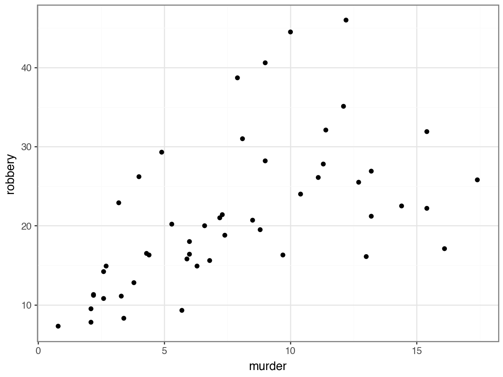

# A collection of R packages designed for data science
library(tidyverse)10 Correlations
TipLearning outcomes
Questions
- What are correlation coefficients?
- What kind of correlation coefficients are there and when do I use them?
Objectives
- Be able to calculate correlation coefficients in R or Python
- Use visual tools to explore correlations between variables
- Know the limitations of correlation coefficients
10.1 Libraries and functions
NoteClick to expand
10.1.1 Libraries
10.1.2 Functions
# Computes the absolute value
base::abs()
# Creates a matrix of scatter plots
graphics::pairs()
# Computes a correlation matrix
stats::cor()
# Creates a heat map
stats::heatmap()
# Turns object into tibble
tibble::as.tibble()
# Lengthens the data
tidyr::pivot_longer()10.1.3 Libraries
# A Python data analysis and manipulation tool
import pandas as pd
# Python equivalent of `ggplot2`
from plotnine import *10.1.4 Functions
# Compute pairwise correlation of columns
pandas.DataFrame.corr()
# Plots the first few rows of a DataFrame
pandas.DataFrame.head()
# Query the columns of a DataFrame with a boolean expression
pandas.DataFrame.query()
# Set the name of the axis for the index or columns
pandas.DataFrame.rename_axis()
# Unpivot a DataFrame from wide to long format
pandas.DataFrame.melt()
# Reads in a .csv file
pandas.DataFrame.read_csv()10.2 Purpose and aim
Correlation refers to the relationship of two variables (or data sets) to one another. Two data sets are said to be correlated if they are not independent from one another. Correlations can be useful because they can indicate if a predictive relationship may exist. However just because two data sets are correlated does not mean that they are causally related.
10.3 Data and hypotheses
We will use the USArrests data set for this example. This rather bleak data set contains statistics in arrests per 100,000 residents for assault, murder and robbery in each of the 50 US states in 1973, alongside the proportion of the population who lived in urban areas at that time. USArrests is a data frame with 50 observations of five variables: state, murder, assault, urban_pop and robbery.
We will be using these data to explore if there are correlations between these variables.
The data are stored in the file data/CS3-usarrests.csv.
10.4 Summarise and visualise
First, we load the data:
# load the data
USArrests <- read_csv("data/CS3-usarrests.csv")
# have a look at the data
USArrests# A tibble: 50 × 5
state murder assault urban_pop robbery
<chr> <dbl> <dbl> <dbl> <dbl>
1 Alabama 13.2 236 58 21.2
2 Alaska 10 263 48 44.5
3 Arizona 8.1 294 80 31
4 Arkansas 8.8 190 50 19.5
5 California 9 276 91 40.6
6 Colorado 7.9 204 78 38.7
7 Connecticut 3.3 110 77 11.1
8 Delaware 5.9 238 72 15.8
9 Florida 15.4 335 80 31.9
10 Georgia 17.4 211 60 25.8
# ℹ 40 more rowsWe can create a visual overview of the potential correlations that might exist between the variables. There are different ways of doing this, for example by creating scatter plots between variable pairs:
# murder vs robbery
ggplot(USArrests,
aes(x = murder, y = robbery)) +
geom_point()
# assault vs urban_pop
ggplot(USArrests,
aes(x = assault, y = urban_pop)) +
geom_point()This gets a bit tedious if there are many unique variable pairs. Unfortunately ggplot() does not have a pairwise function, but we can borrow the one from base R. The pairs() function only wants numerical data, so we need to remove the state column for this. The pairs() function has a lower.panel argument that allows you to remove duplicate combinations (after all murder vs assault is the same as assault vs murder):
USArrests %>%
select(-state) %>%
pairs(lower.panel = NULL)
First, we load the data:
USArrests_py = pd.read_csv("data/CS3-usarrests.csv")
USArrests_py.head() state murder assault urban_pop robbery
0 Alabama 13.2 236 58 21.2
1 Alaska 10.0 263 48 44.5
2 Arizona 8.1 294 80 31.0
3 Arkansas 8.8 190 50 19.5
4 California 9.0 276 91 40.6We can create a visual overview of the potential correlations that might exist between the variables. There are different ways of doing this, for example by creating scatter plots between variable pairs:
# murder vs robbery
p = (ggplot(USArrests_py,
aes(x = "murder",
y = "robbery")) +
geom_point())
p.show()
# assault vs urban_pop
p = (ggplot(USArrests_py,
aes(x = "assault",
y = "urban_pop")) +
geom_point())
p.show()This gets a bit tedious if there are many unique variable pairs. There is an option to automatically create a matrix of scatter plots, using Seaborn. But that would involve installing the seaborn package just for this. And frankly, I don’t want to - not least because staring at tons of scatter plots is probably not the best way forward anyway!
If you have your heart set on creating a pairplot, then have a look at the seaborn documentation.
From the visual inspection we can see that there appears to be a slight positive correlation between all pairs of variables, although this may be very weak in some cases (murder and urban_pop for example).
10.5 Correlation coefficients
Instead of visualising the variables against each other in a scatter plot, we can also calculate correlation coefficients for each variable pair. There are different types of correlation coefficients, but the most well-known one is probably Pearson’s r. This is a measure of the linear correlation between two variables. It has a value between -1 and +1, where +1 means a perfect positive correlation, -1 means a perfect negative correlation and 0 means no correlation at all.
There are other correlation coefficients, most notably the Spearman’s rank correlation coefficient, a non-parametric measure of rank correlation and is generally less sensitive to outliers.
So, let’s calculate Pearson’s r for our data:
We can do this using the cor() function. Since we can only calculate correlations between numbers, we have to remove the state column from our data before calculating the correlations:
USArrests %>%
select(-state) %>%
cor() murder assault urban_pop robbery
murder 1.00000000 0.8018733 0.06957262 0.5635788
assault 0.80187331 1.0000000 0.25887170 0.6652412
urban_pop 0.06957262 0.2588717 1.00000000 0.4113412
robbery 0.56357883 0.6652412 0.41134124 1.0000000This gives us a numerical overview of the Pearson’s r correlation coefficients between each variable pair. Note that across the diagonal the correlation coefficients are 1 - this should make sense since, for example, murder is perfectly correlated with itself.
As before, the values are mirrored across the diagonal, since the correlation between, for example, murder and assault is the same as the one between assault and murder.
10.5.1 Visualise the correlation matrix
Just staring at a matrix of numbers might not be very useful. It would be good to create some sort of heatmap of the values, so we can visually inspect the data a bit better. There are dedicated packages that allow you to do this (for example the corrr) package).
Here we’ll just use the standard stats::heatmap() function. The symm argument tells the function that we have a symmetric matrix and in conjunction with the Rowv = NA argument stops the plot from reordering the rows and columns. The Rowv = NA argument also stops the function from adding dendrograms to the margins of the plot.
The plot itself is coloured from yellow, indicating the smallest values (which in this case correspond to no difference in correlation coefficients), through orange to dark red, indicating the biggest values (which in this case correspond to the variables with the biggest difference in correlation coefficients).
The plot is symmetric along the leading diagonal (hopefully for obvious reasons).
USArrests %>%
select(-state) %>%
cor() %>%
heatmap(symm = TRUE, Rowv = NA)
NoteAlternative method 1: ggplot
Before we can plot the data we need to reformat the data. We’re taking the following steps:
- we calculate the correlation matrix with
cor()using the (default) method ofmethod = "pearson" - convert the output to a tibble so we can use
pivot_longer()to reformat the data into pairwise variables and a column with the Pearson’s r value- use the
mutate()andround()functions to round the Pearson’s r values
USArrests_pear <- USArrests %>%
select(-state) %>%
cor(method = "pearson") %>%
as_tibble(rownames = "var1") %>%
pivot_longer(cols = -var1,
names_to = "var2",
values_to = "pearson_cor") %>%
mutate(pearson_cor = round(pearson_cor, digits = 3))The output of that looks like this:
head(USArrests_pear)# A tibble: 6 × 3
var1 var2 pearson_cor
<chr> <chr> <dbl>
1 murder murder 1
2 murder assault 0.802
3 murder urban_pop 0.07
4 murder robbery 0.564
5 assault murder 0.802
6 assault assault 1 After all that, we can visualise the data with geom_tile(), adding the Pearson’s r values as text labels:
ggplot(USArrests_pear,
aes(x = var1, y = var2, fill = pearson_cor)) +
geom_tile() +
geom_text(aes(label = pearson_cor),
color = "white",
size = 4)
NoteAlternative method 2: rstatix
As always, there are multiple ways to skin a proverbial cat. If you’d rather use a function from the rstatix package (which we’ve loaded before), then you can run the following code, which uses the rstatix::cor_test() function:
USArrests %>%
select(-state) %>%
cor_test() %>%
select(var1, var2, cor) %>%
ggplot(aes(x = var1, y = var2, fill = cor)) +
geom_tile() +
geom_text(aes(label = cor),
color = "white",
size = 4)
We can do this using the pandas.DataFrame.corr() function. This function takes the default method = "pearson". It should ignore the state column, so we tell it to.
USArrests_py.corr(numeric_only = True) murder assault urban_pop robbery
murder 1.000000 0.801873 0.069573 0.563579
assault 0.801873 1.000000 0.258872 0.665241
urban_pop 0.069573 0.258872 1.000000 0.411341
robbery 0.563579 0.665241 0.411341 1.000000This gives us a numerical overview of the Pearson’s r correlation coefficients between each variable pair. Note that across the diagonal the correlation coefficients are 1 - this should make sense since, for example, murder is perfectly correlated with itself.
As before, the values are mirrored across the diagonal, since the correlation between, for example, murder and assault is the same as the one between assault and murder.
10.5.2 Visualise the correlation matrix
Just staring at a matrix of numbers might not be very useful. It would be good to create some sort of heatmap of the values, so we can visually inspect the data a bit better.
# create correlation matrix
USArrests_cor_py = USArrests_py.corr(numeric_only = True)
# put the row names into a column
USArrests_cor_py = USArrests_cor_py.rename_axis("var1").reset_index()
USArrests_cor_py.head() var1 murder assault urban_pop robbery
0 murder 1.000000 0.801873 0.069573 0.563579
1 assault 0.801873 1.000000 0.258872 0.665241
2 urban_pop 0.069573 0.258872 1.000000 0.411341
3 robbery 0.563579 0.665241 0.411341 1.000000Now that we have the correlation matrix in a workable format, we need to restructure it so that we can plot the data. For this, we need to create a “long” format, using the melt() function.
USArrests_pear_py = pd.melt(USArrests_cor_py,
id_vars=['var1'],
value_vars=['murder', 'assault', 'urban_pop', 'robbery'],
var_name='var2',
value_name='cor').round(3)Have a look at the structure:
USArrests_pear_py.head() var1 var2 cor
0 murder murder 1.000
1 assault murder 0.802
2 urban_pop murder 0.070
3 robbery murder 0.564
4 murder assault 0.802p = (ggplot(USArrests_pear_py,
aes(x = "var1", y = "var2", fill = "cor")) +
geom_tile() +
geom_text(aes(label = "cor"),
colour = "white",
size = 10))
p.show()The correlation matrix and visualisations give us the insight that we need. The most correlated variables are murder and assault with an \(r\) value of 0.80. This appears to agree well with the set plots that we produced earlier.
10.6 Spearman’s rank correlation coefficient
This test first calculates the rank of the numerical data (i.e. their position from smallest (or most negative) to the largest (or most positive)) in the two variables and then calculates Pearson’s product moment correlation coefficient using the ranks. As a consequence, this test is less sensitive to outliers in the distribution.
USArrests %>%
select(-state) %>%
cor(method = "spearman") murder assault urban_pop robbery
murder 1.0000000 0.8172735 0.1067163 0.6794265
assault 0.8172735 1.0000000 0.2752133 0.7143681
urban_pop 0.1067163 0.2752133 1.0000000 0.4381068
robbery 0.6794265 0.7143681 0.4381068 1.0000000USArrests_py.corr(method = "spearman", numeric_only = True) murder assault urban_pop robbery
murder 1.000000 0.817274 0.106716 0.679427
assault 0.817274 1.000000 0.275213 0.714368
urban_pop 0.106716 0.275213 1.000000 0.438107
robbery 0.679427 0.714368 0.438107 1.00000010.7 Exercises
10.7.1 Pearson’s r
10.8.1 Spearman’s correlation
ExerciseExercise 2
Level:
Calculate Spearman’s correlation coefficient for the data/CS3-statedata.csv data set.
Which variable’s correlations are affected most by the use of the Spearman’s rank compared with Pearson’s r? Hint: think of a way to address this question programmatically.
Thinking about the variables, can you explain why this might this be?
AnswerAnswer
10.9 Answer
In order to determine which variables are most affected by the choice of Spearman vs Pearson you could just plot both matrices out side by side and try to spot what was going on, but one of the reasons we’re using programming languages is that we can be a bit more programmatic about these things. Also, our eyes aren’t that good at processing and parsing this sort of information display. A better way would be to somehow visualise the data.
First, calculate the Pearson and Spearman correlation matrices (technically, we’ve done the Pearson one already, but we’re doing it again for clarity here).
cor_pear <- USAstate %>%
select(-state) %>%
cor(method = "pearson")
cor_spear <- USAstate %>%
select(-state) %>%
cor(method = "spearman")We can calculate the difference between two matrices by subtracting them.
cor_diff <- cor_pear - cor_spearAgain, we could now just look at a grid of 64 numbers and see if we can spot the biggest differences, but our eyes aren’t that good at processing and parsing this sort of information display. A better way would be to visualise the data.
heatmap(abs(cor_diff), symm = TRUE, Rowv = NA)The abs() function calculates the absolute value (i.e. just the magnitude) of the matrix values. This is just because I only care about situations where the two correlation coefficients are different from each other but I don’t care which is the larger. The symm argument tells the function that we have a symmetric matrix and in conjunction with the Rowv = NA argument stops the plot from reordering the rows and columns. The Rowv = NA argument also stops the function from adding dendrograms to the margins of the plot.
First, calculate the Pearson and Spearman correlation matrices (technically, we’ve done the Pearson one already, but we’re doing it again for clarity here).
cor_pear_py = USAstate_py.corr(method = "pearson", numeric_only = True)
cor_spea_py = USAstate_py.corr(method = "spearman", numeric_only = True)We can calculate the difference between two matrices by subtracting them.
cor_dif_py = cor_pear_py - cor_spea_pyAgain, we could now just look at a grid of 64 numbers and see if we can spot the biggest differences, but our eyes aren’t that good at processing and parsing this sort of information display. A better way would be to visualise the data.
# get the row names in a column
cor_dif_py = cor_dif_py.rename_axis("var1").reset_index()
# reformat the data into a long format
# and round the values
cor_dif_py = pd.melt(cor_dif_py,
id_vars=['var1'],
var_name='var2',
value_name='cor').round(3)
# create a column with absolute correlation difference values
cor_dif_py["abs_cor"] = cor_dif_py["cor"].abs()
# have a look at the final data frame
cor_dif_py.head() var1 var2 cor abs_cor
0 population population 0.000 0.000
1 income population 0.084 0.084
2 illiteracy population -0.205 0.205
3 life_exp population 0.036 0.036
4 murder population -0.002 0.002Now we can plot the data:
p = (ggplot(cor_dif_py,
aes(x = "var1", y = "var2", fill = "abs_cor")) +
geom_tile() +
geom_text(aes(label = "abs_cor"),
colour = "white",
size = 10))
p.show()
All in all there is not a huge difference in correlation coefficients, since the values are all quite small. Most of the changes occur along the area variable. One possible explanation could be that certain states with a large area have a relatively large effect on the Pearson’s r coefficient. For example, Alaska has an area that is over twice as big as the next state - Texas.
If, for example, we’d look a bit closer then we would find for area and income that Pearson gives a value of 0.36, a slight positive correlation, whereas Spearman gives a value of 0.057, basically uncorrelated.
This means that this is basically ignored by Spearman.
Well done, Mr. Spearman.
10.10 Summary
TipKey points
- Correlation is the degree to which two variables are linearly related
- Correlation does not imply causation
- We can visualise correlations by plotting variables against each other or creating heatmap-type plots of the correlation coefficients
- Two main correlation coefficients are Pearson’s r and Spearman’s rank, with Spearman’s rank being less sensitive to outliers